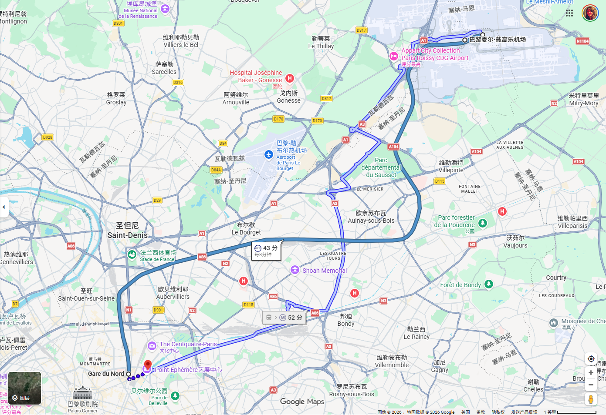
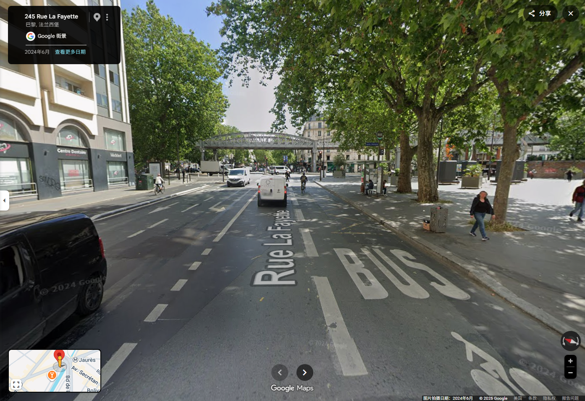
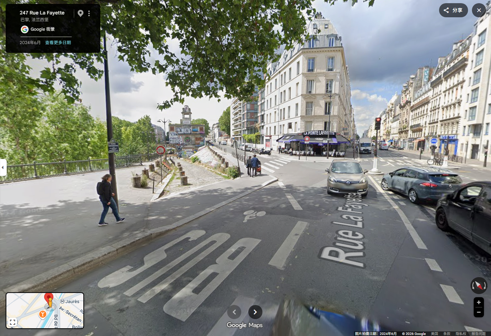
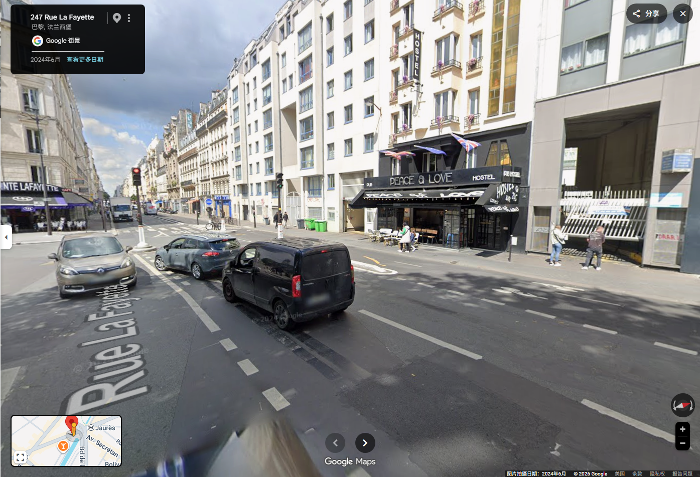
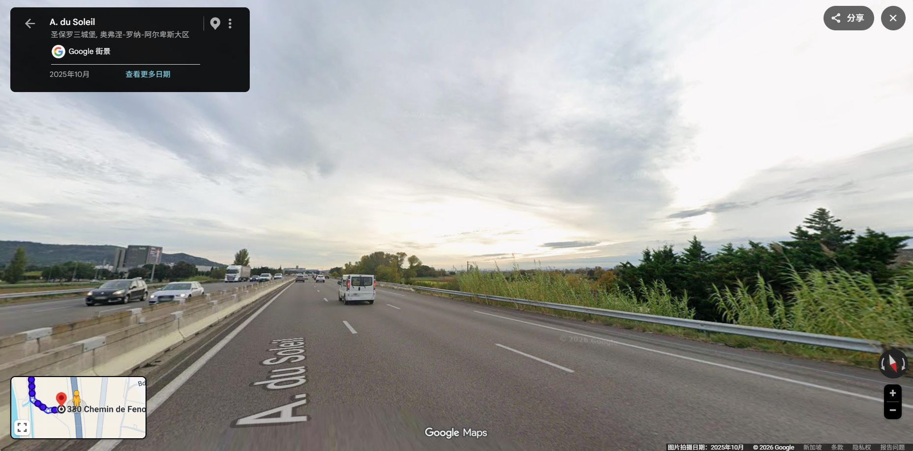
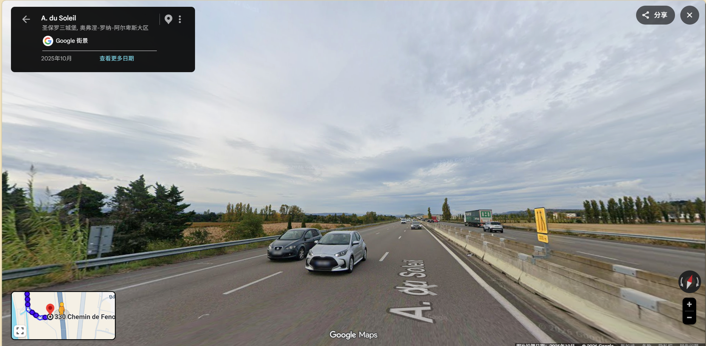

“在葡萄园的微风与小镇的烟火气中，感受法兰西的另一面”
7月的法国正值盛夏，南部（马赛、圣保罗三堡）阳光热烈，北部（巴黎、圣马洛）早晚可能有温差。精简行李，留出空间，随时准备迎接高强度的徒步与城市暴走。
如果您没有在国内提前买好，戴高乐机场 (CDG) 确定有实体店。您可以在到达大厅寻找红色的 Relay 便利店，或者直接找 Boutique Orange 专柜。
🗣️ 沟通话术（可直接展示或读给店员）：
如果是提前买好了卡或在机场刚买到，请必须按照以下设置，确保国内号免费收短信的同时彻底切断流量：
Step 1. 起飞前：开通基础漫游 (必须在国内完成)
通过运营商 App (移动/联通/电信) 免费开通国际漫游。只需开通语音和短信漫游即可，千万别买流量包！否则国内卡会无服务。
Step 2. 降落前/插卡时：物理插卡
在飞机降落前或买卡后，将 Orange Holiday 实体卡插入备用卡槽。此时手机应为“国内号+法国号”双卡状态。
Step 3. 落地开机：指定默认流量卡
进入“设置” -> “蜂窝网络”/“双卡移动网络”，将【默认移动数据】设为法国 Orange 卡。
Step 4. 终极保险：关闭智能切换与漫游
✅ 最终效果： 手机呈现“完美形态”，法国卡提供极速 5G 网络，国内卡在后台免费、实时接收所有验证码短信。
| 机构 | 电话 | 备注 |
|---|---|---|
| 欧洲通用紧急号码 | 112 | 任何紧急情况优先拨打 (有英文服务) |
| 法国报警电话 | 17 | 遭遇盗抢、纠纷时拨打 |
| 法国医疗急救 (SAMU) | 15 | 突发疾病或严重外伤时拨打 |
| 中国驻法大使馆领保热线 | +33 1 53 75 88 40 | 护照遗失或涉及中国公民权益时 |
UnionPay（银联）标识的 ATM 机直接取现（扣部分手续费，但汇率优于人工店）；极不推荐在机场的 Travelex 人工柜台换汇，汇率极差。如果由于 Cloudflare 网络风控导致无法线上注册账号，或由于安卓系统 NFC 兼容性导致 App 报错提示“版本不够新”，立刻放弃线上折腾，转为落地后线下办理实体卡。
Song Hu。这张卡可以一直用到 7 月 5 日周日晚上，无限次刷闸机进站。法国药妆店（带绿色十字标志）随处可见，可以买到很好的护肤品，但处方药购买极严，感冒消炎等常备药必须自己带足。
欧洲绝大多数酒店（无论是青旅还是高档公寓）出于环保，绝对不提供牙刷和牙膏。拖鞋也仅有少部分提供。
此次 17 天的行程横跨法国东西南北，气候跨度大。全程以公共交通（TGV 高铁 + TER 区域火车 + Local Bus）为主干，配合市区地铁与徒步。请务必提前将所有电子票据存入手机钱包，并保留纸质备份。


| 类型 | 航线 | 日期 | 时间 | 航班号 | 航站楼 | 备注 |
|---|---|---|---|---|---|---|
| 去程 | PEK ➔ CDG | 07/01 | 23:05 - 05:50(+1) | AF201 | T2 ➔ T2E | 法航 B787-9 |
| 回程 | CDG ➔ PEK | 07/18 | 22:45 - 15:55(+1) | AF202 | T2E ➔ T2 | 法航 B787-9 |
巴黎 Peace & Love Hostel 要求必须提前 24 小时确认抵达时间。请在登机前给旅舍发送邮件或致电 (+33 1 46 07 65 11)，告知他们您乘坐 AF201 航班于明早 05:50 落地，预计上午抵达旅舍存放行李。
所有火车最晚需在发车前 2 分钟 登车。建议提前 15-20 分钟 抵达车站寻找站台。
| 序号 | 路线 | 日期 | 车次信息 | 发车 - 抵达 | 座位/等级 |
|---|---|---|---|---|---|
| 1 | 巴黎 ➔ 圣马洛 | 07/07 | TGV 12241 | 07:01 - 09:55 | 车厢 5, 座位 515 (Window) |
| 2 | 圣马洛 ➔ 迪镇 | 07/09 | 见下文(多段) | 17:31 - 05:09(+1) | 多段换乘 (含夜车) |
| 3 | 迪镇 ➔ 皮埃尔拉特 | 07/13 | 见下文(多段) | 08:53 - 10:28 | 区域列车, 自由落座 |
| 4 | 皮埃尔拉特 ➔ 马赛 | 07/15 | TRAIN ZOU 886557 | 07:09 - 09:09 | 区域列车, 自由落座 |
| 5 | 马赛 ➔ 巴黎 | 07/18 | TGV 6106 | 07:03 - 10:22 | 车厢 18, 座位 843 (Upper) |
05:50 抵达巴黎戴高乐机场 (CDG)。
办理 Navigo 周卡 (Navigo Semaine)：前往机场 RER 站服务台购买并充值。需自备 1 寸免冠证件照，购卡后务必贴上照片并签名，以符合实名制查票要求。
前往市区：自 2E 航站楼提取行李后，循 "Paris par Train (RER B)" 指示牌步行至 2 号航站楼自带的高铁与快线站 (Aéroport Charles de Gaulle 2 TGV)。刷 Navigo 卡进站，乘坐开往巴黎市区方向 (Paris / Robinson / Saint-Rémy-lès-Chevreuse) 的 RER B 线。
巴黎北站 (Gare du Nord) 下车：车程约 35-40 分钟。到站后下车，出站步行 1.1km 前往住宿地。


| 项目 | 详情 |
|---|---|
| 酒店地址 | 245 Rue La Fayette, 10th arr., 75010 Paris |
| 入住日期 | 07/02 (周四) - 07/07 (周二) |
| 时段 | 入住 15:00-00:00 / 退房 05:00-11:00 |
| 联系电话 | +33 1 46 07 65 11 |
| 房型 | 混合标准三人间内的单人床 (1 bunk bed) |





 随后前往 蓬皮杜广场，看看前卫建筑与周边老街区的融合；顺路去 Citypharma 药妆店，为女朋友准备好 兰蔻新持妆轻透粉底液。
随后前往 蓬皮杜广场，看看前卫建筑与周边老街区的融合；顺路去 Citypharma 药妆店，为女朋友准备好 兰蔻新持妆轻透粉底液。


Song Hu）。入场要求明确为“请准备好您的参观凭证和/或身份证件”。务必随身带好护照原件，并提前将整张电子票完整截图（或将完整 PDF 原件存入手机）。切勿单独截取一个二维码，否则遇到抽查时工作人员将无法核实本人身份导致无法入场。明天将前往圣马洛。请在今天通过电话或短信联系协调员 Isa (+33 6 31 55 67 16)，预约明天下午 (14:00 - 18:00 之间) 具体的交接钥匙时间。法文沟通参考："Bonjour Isa, c'est Song Hu. J'arriverai à Saint-Malo demain. Pouvons-nous nous retrouver à l'appartement vers [填入您的预计时间,如 15h00] ?"
09:55 AM 抵达圣马洛站，建议步行前往 Saint-Servan 街区住宿点。

| 项目 | 详情 |
|---|---|
| 详细地址 | 31, rue de la grande anguille, 2ème étage, 35400 Saint-Malo |
| 入住日期 | 07/07 (周二) - 07/10 (周五) |
| 钥匙交接 | 14:00 - 18:00 (必须提前邮件预约准确时间) |
| 联系人 | 协调员 Isa (+33 6 31 55 67 16) |
必须在抵达前联系协调员 Isa 预约时间。法文房东邮件明确指出由 Isa 负责对接（而非 Lea），如时间变更需立即致电。此外，公寓的 螺旋楼梯 (cage d'escalier en colimaçon) 目前正在翻修，搬运行李时请注意安全。


今晚将乘坐夜车前往迪镇。由于跨城长途铁路线偶尔会晚点，请在发车前或换乘的路上，给房东 Alain (06 25 56 46 20) 发送一条短信，告知您的行程状态和预计明早抵达迪镇的时间。
跨城移动约 11 小时 38 分钟。需特别关注 雷恩站 10 分钟 同站换乘以及 巴黎 53 分钟 跨站转移。
🚨 体能与楼梯警告:
巴黎地铁 6 号线与 5 号线换乘站 (如 Place d'Italie, Austerlitz) 楼梯极多且可能无扶梯/电梯。
请务必控制行李重量 (建议控制在 15-20kg 以内)，确保您能一个人提着行李箱快速上下楼梯冲刺。


| 项目 | 详情 |
|---|---|
| 详细地址 | 2 Rue Tricolet, 26150 Die, France |
| 联系人 | Alain (06 25 56 46 20) |
| 语言 | 仅法语 (I don't speak English) |
| 入住规则 | 无自助入住, 必须当面交接钥匙 |
房东 Alain 确认：目前公寓周五早晨没有被预订。只要没有新的预订，您抵达后可直接步行前往公寓入住（从火车站过去约 10 分钟），他会在那里接待。他特别提醒，因为该铁路线有时会晚点，请在旅途中尽早通过短信向他同步您的行程动态。


明天将前往圣保罗-特鲁瓦堡。请检查您的 Booking 站内信或 WhatsApp，确认房东 Laurence 是否已经发送了密码钥匙盒的密码。若未收到，请主动发消息询问："Hello Laurence, could you please send me the code for the keybox for my arrival tomorrow? Thank you!"


| 项目 | 详情 |
|---|---|
| 详细地址 | 30 Chemin de Fenouillet, 26130 Saint-Paul-Trois-Châteaux |
| 空间特征 | 郊区独栋房屋，周边为松散的树篱与农田 |
房东 Laurence 确认：房源配有密码钥匙盒，支持自助入住。她会在您抵达前通过预订网站或 WhatsApp 发送钥匙盒密码。她和家人就住在隔壁，如果入住后有任何需要，随时可以找到人帮忙。


这里是侯麦 《秋天的故事》 (Conte d'automne) 的核心取景地，且适逢 7 月 14 日法国国庆日。旅程将呈现“私人葡萄园微观情感空间”与“国家宏大叙事下沉到乡村”的强烈冲撞。


| 项目 | 详情 |
|---|---|
| 详细地址 | 26 Boulevard Ferdinand de Lesseps, 13003 Marseille, France |
| 社区特征 | 多元文化交融的街区，充满生活气息和活力 |
您的 Orange Holiday 实体卡 (14天有效期) 预计在今天到期！请在前往马赛的火车上，利用乘车时间登录 Orange 官网（或点击短信里的 Top-up 链接），购买一个几 GB 的短期流量包，确保最后三天在马赛和回程巴黎的网络畅通。
本预算不包含已提前支付的住宿费、国际机票、法国高铁 (TGV) 车票以及卢浮宫门票。核心策略为：充分利用自带厨房的公寓/民宿超市买菜做饭，结合廉价街头快餐，以最低成本覆盖全程。
根据上述统计，建议按以下金额准备银行卡余额与现金：
您一个人旅行，保持警惕与节奏是核心。法国虽然浪漫，但对陌生环境的“社会经验”同样重要。